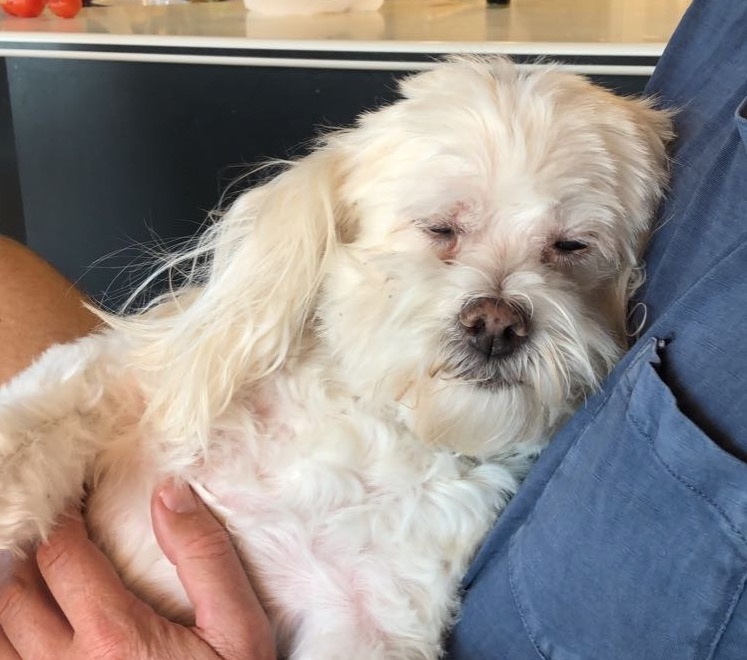
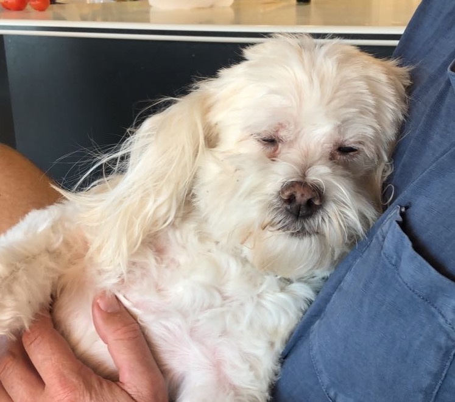
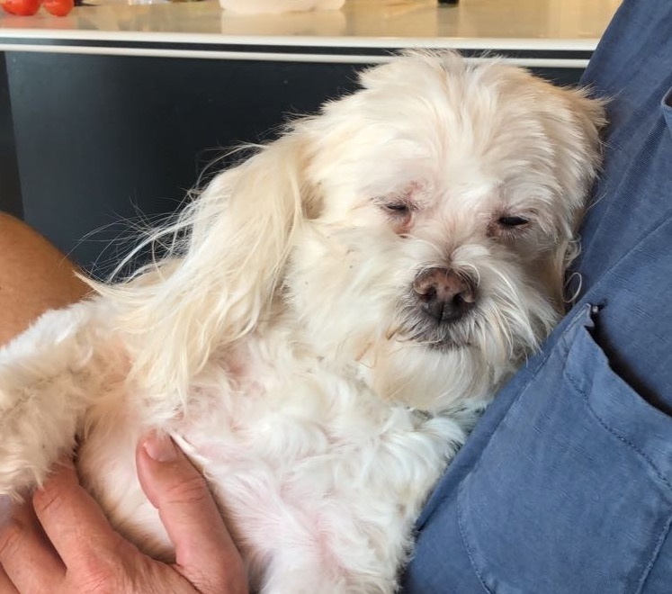

Gallery
 


Feeding Puppies eight to 12 weeks old need four meals a day. Feed puppies three to six months old three meals a day. Feed puppies six months to one year two meals a day. When your dog reaches his first birthday, one meal a day is usually enough. For some dogs, including larger canines or those prone to bloat, it's better to feed two smaller meals. Premium-quality dry food provides a well-balanced diet for adult dogs and may be mixed with water, broth or canned food. Your dog may enjoy cottage cheese, cooked egg or fruits and vegetables, but these additions should not total more than ten percent of his daily food intake. Puppies should be fed a high-quality, brand-name puppy food (large breed puppy foods for large breeds). Please limit "people food," however, because it can result in vitamin and mineral imbalances, bone and teeth problems and may cause very picky eating habits and obesity. Clean, fresh water should be available at all times, and be sure to wash food and water dishes frequently. Exercise Dogs need exercise to burn calories, stimulate their minds, and stay healthy. Individual exercise needs vary based on breed or breed mix, sex, age and level of health. Exercise also tends to help dogs avoid boredom, which can lead to destructive behaviors. Supervised fun and games will satisfy many of your pet's instinctual urges to dig, herd, chew, retrieve and chase. Grooming Help keep your dog clean and reduce shedding with frequent brushing. Check for fleas and ticks daily during warm weather. Most dogs don't need to be bathed more than a few times a year. Before bathing, comb or cut out all mats from the coat. Carefully rinse all soap out of the coat, or the dirt will stick to soap residue. Please visit our Dog Grooming Tips page for more information. Handling To carry a puppy or small dog, place one hand under the dog's chest, with either your forearm or other hand supporting the hind legs and rump. Never attempt to lift or grab your puppy or small dog by the forelegs, tail or back of the neck. If you do have to lift a large dog, lift from the underside, supporting his chest with one arm and his rear end with the other. Housing Your pet needs a warm, quiet place to rest, away from all drafts and off the floor. A training crate or dog bed is ideal, with a clean blanket or pillow placed inside. Wash the dog's bedding often. If your dog will be spending a lot of time outdoors, be sure she has access to shade and plenty of cool water in hot weather, and a warm, dry, covered shelter when it's cold.
content